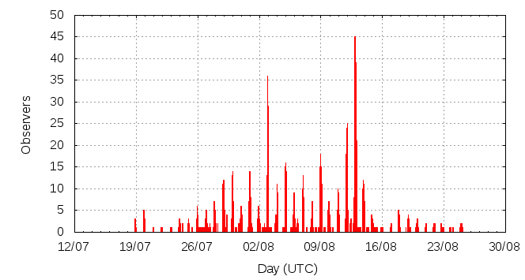

[ www.imo.net ]
This page shows automated results of the Perseids 2014, based on visual observations reported by citizen scientists through the report form of the International Meteor Organization (IMO). The information on this page is generated automatically; for scientific use please refer to manual analyses published in scientific journals (such as WGN). Send your feedback regarding this page to Geert Barentsen.
Page contents:
 12-13 August in detail (NEW)
12-13 August in detail (NEW)Note that the data will finally go into the Visual Meteor Database (VMDB) with manual inspection and rectifications. We are curretly completing the files of 2008-2011. The VMDB is an enormous project - any help will be greatly appreciated.
Page generated: 2014 October 21 at 2:30 UTC.
The graph below shows the ZHR (Zenithal Hourly Rate), which is the number of meteors an observer would see under a very dark sky with the radiant of the shower in zenith.
ZHRmax = 68 based on 6280 Perseids reported in 1374 intervals, assuming population index r = 2.0

| Time (UTC) | Solarlon | nINT | nPER | ZHR | Particle density | |
|---|---|---|---|---|---|---|
| 2014-07-19 12:33 | 116.572 | 17 | 22 | 5 | ±1 | 5 / 109·km3 |
| 2014-07-21 23:00 | 118.897 | 6 | 16 | 6 | ±1 | 6 / 109·km3 |
| 2014-07-24 09:43 | 121.233 | 27 | 33 | 4 | ±1 | 4 / 109·km3 |
| 2014-07-26 12:00 | 123.235 | 58 | 122 | 6 | ±1 | 6 / 109·km3 |
| 2014-07-28 17:21 | 125.360 | 75 | 172 | 8 | ±1 | 8 / 109·km3 |
| 2014-07-30 04:03 | 126.743 | 79 | 202 | 8 | ±1 | 8 / 109·km3 |
| 2014-07-31 19:22 | 128.310 | 72 | 201 | 8 | ±1 | 8 / 109·km3 |
| 2014-08-02 13:46 | 130.000 | 57 | 202 | 13 | ±1 | 12 / 109·km3 |
| 2014-08-02 23:32 | 130.390 | 68 | 266 | 14 | ±1 | 13 / 109·km3 |
| 2014-08-03 10:57 | 130.846 | 46 | 203 | 14 | ±1 | 13 / 109·km3 |
| 2014-08-04 13:42 | 131.912 | 43 | 207 | 16 | ±1 | 15 / 109·km3 |
| 2014-08-05 01:06 | 132.367 | 35 | 259 | 24 | ±1 | 23 / 109·km3 |
| 2014-08-05 22:14 | 133.210 | 39 | 205 | 18 | ±1 | 17 / 109·km3 |
| 2014-08-06 21:39 | 134.145 | 26 | 210 | 16 | ±1 | 15 / 109·km3 |
| 2014-08-08 00:39 | 135.222 | 27 | 204 | 20 | ±1 | 19 / 109·km3 |
| 2014-08-08 23:19 | 136.128 | 51 | 205 | 19 | ±1 | 18 / 109·km3 |
| 2014-08-09 01:37 | 136.219 | 39 | 310 | 29 | ±2 | 27 / 109·km3 |
| 2014-08-10 16:16 | 137.763 | 60 | 202 | 19 | ±1 | 18 / 109·km3 |
| 2014-08-11 21:27 | 138.929 | 58 | 200 | 29 | ±2 | 27 / 109·km3 |
| 2014-08-12 00:26 | 139.048 | 73 | 337 | 32 | ±2 | 30 / 109·km3 |
| 2014-08-12 08:36 | 139.374 | 35 | 203 | 40 | ±3 | 38 / 109·km3 |
| 2014-08-12 22:03 | 139.912 | 84 | 550 | 61 | ±3 | 58 / 109·km3 |
| 2014-08-12 23:50 | 139.983 | 96 | 652 | 49 | ±2 | 46 / 109·km3 |
| 2014-08-13 01:40 | 140.057 | 45 | 409 | 68 | ±3 | 64 / 109·km3 |
| 2014-08-13 18:31 | 140.731 | 28 | 203 | 53 | ±4 | 50 / 109·km3 |
| 2014-08-13 21:55 | 140.867 | 43 | 202 | 45 | ±3 | 43 / 109·km3 |
| 2014-08-14 19:58 | 141.749 | 22 | 109 | 24 | ±2 | 23 / 109·km3 |
| 2014-08-17 03:51 | 143.986 | 25 | 74 | 10 | ±1 | 9 / 109·km3 |
| 2014-08-19 07:54 | 146.072 | 16 | 62 | 7 | ±1 | 7 / 109·km3 |
| 2014-08-21 19:22 | 148.457 | 14 | 22 | 4 | ±1 | 4 / 109·km3 |
| 2014-08-24 00:22 | 150.585 | 7 | 12 | 3 | ±1 | 3 / 109·km3 |
| 2014-08-25 00:48 | 151.568 | 3 | 4 | 2 | ±1 | 2 / 109·km3 |
The reported intervals are automatically added together into the bins shown above, based on the number of meteors and the distribution of the intervals. For each bin, the following parameters are computed:

| Time (UTC) | Solarlon | nINT | nPER | ZHR | Particle density | |
|---|---|---|---|---|---|---|
| 2014-08-11 21:21 | 138.925 | 21 | 52 | 26 | ±4 | 25 / 109·km3 |
| 2014-08-11 22:21 | 138.965 | 13 | 54 | 31 | ±4 | 29 / 109·km3 |
| 2014-08-11 22:51 | 138.985 | 10 | 51 | 33 | ±5 | 31 / 109·km3 |
| 2014-08-11 23:19 | 139.003 | 11 | 51 | 33 | ±5 | 31 / 109·km3 |
| 2014-08-11 23:47 | 139.022 | 10 | 56 | 35 | ±5 | 33 / 109·km3 |
| 2014-08-12 00:14 | 139.040 | 15 | 53 | 22 | ±3 | 21 / 109·km3 |
| 2014-08-12 00:39 | 139.057 | 12 | 54 | 30 | ±4 | 28 / 109·km3 |
| 2014-08-12 00:58 | 139.069 | 11 | 50 | 33 | ±5 | 31 / 109·km3 |
| 2014-08-12 01:17 | 139.082 | 12 | 58 | 29 | ±4 | 27 / 109·km3 |
| 2014-08-12 01:40 | 139.097 | 9 | 51 | 30 | ±4 | 28 / 109·km3 |
| 2014-08-12 09:40 | 139.417 | 9 | 54 | 52 | ±7 | 49 / 109·km3 |
| 2014-08-12 20:23 | 139.846 | 9 | 51 | 50 | ±7 | 47 / 109·km3 |
| 2014-08-12 21:19 | 139.883 | 9 | 53 | 48 | ±7 | 45 / 109·km3 |
| 2014-08-12 21:35 | 139.894 | 16 | 80 | 46 | ±5 | 43 / 109·km3 |
| 2014-08-12 21:57 | 139.908 | 21 | 128 | 58 | ±5 | 55 / 109·km3 |
| 2014-08-12 22:20 | 139.924 | 16 | 159 | 106 | ±8 | 100 / 109·km3 |
| 2014-08-12 22:36 | 139.934 | 11 | 66 | 56 | ±7 | 53 / 109·km3 |
| 2014-08-12 22:57 | 139.948 | 14 | 106 | 48 | ±5 | 45 / 109·km3 |
| 2014-08-12 23:16 | 139.961 | 18 | 115 | 61 | ±6 | 58 / 109·km3 |
| 2014-08-12 23:37 | 139.975 | 20 | 152 | 50 | ±4 | 47 / 109·km3 |
| 2014-08-13 00:00 | 139.990 | 18 | 110 | 41 | ±4 | 39 / 109·km3 |
| 2014-08-13 00:17 | 140.002 | 12 | 61 | 47 | ±6 | 44 / 109·km3 |
| 2014-08-13 00:38 | 140.016 | 11 | 89 | 45 | ±5 | 43 / 109·km3 |
| 2014-08-13 00:59 | 140.030 | 11 | 74 | 51 | ±6 | 48 / 109·km3 |
| 2014-08-13 01:18 | 140.042 | 9 | 86 | 71 | ±8 | 67 / 109·km3 |
| 2014-08-13 01:38 | 140.056 | 7 | 72 | 70 | ±8 | 66 / 109·km3 |
| 2014-08-13 01:58 | 140.069 | 9 | 78 | 64 | ±7 | 60 / 109·km3 |
| 2014-08-13 02:28 | 140.089 | 5 | 53 | 73 | ±10 | 69 / 109·km3 |
| 2014-08-13 08:13 | 140.318 | 5 | 61 | 44 | ±6 | 42 / 109·km3 |
| 2014-08-13 19:37 | 140.774 | 7 | 54 | 67 | ±9 | 63 / 109·km3 |
| 2014-08-13 19:57 | 140.788 | 8 | 51 | 65 | ±9 | 61 / 109·km3 |
| 2014-08-13 20:26 | 140.807 | 12 | 51 | 45 | ±6 | 43 / 109·km3 |
| 2014-08-13 21:02 | 140.831 | 11 | 53 | 59 | ±8 | 56 / 109·km3 |
| 2014-08-13 21:40 | 140.857 | 10 | 54 | 46 | ±6 | 43 / 109·km3 |
| 2014-08-13 22:22 | 140.885 | 9 | 51 | 45 | ±6 | 43 / 109·km3 |
| 2014-08-13 23:39 | 140.936 | 13 | 53 | 36 | ±5 | 34 / 109·km3 |
Data has been received from 141 observers in 30 countries. Thank you for your efforts!
Note: click on the map for an interactive version.

| Observer | Country | Teff | nPER |
|---|---|---|---|
| Marina Arnaut | Serbia | 10.5h | 106 |
| Dorina Balind | Hungary | 1.23h | 6 |
| Orlando Benítez Sánchez | Spain | 19.36h | 44 |
| Martina Birosikova | Slovakia | 1.95h | 8 |
| Mathieu Blanc | France | 1.50h | 13 |
| Jakub Cerny | Czech Republic | 0.30h | 2 |
| Iris Charalambidou | Cyprus | 1.00h | 12 |
| Seokhee Cho | South Korea | 1.00h | 1 |
| Klemen Cotar | Slovenia | 4.41h | 40 |
| Tibor Csorgei | Slovakia | 2h | 11 |
| Martin Dana | Czech Republic | 3.5h | 14 |
| Alex Daskalakis | Greece | 0.50h | 4 |
| Alexandros Daskalakis | Greece | 2.07h | 12 |
| Jose Vicente Diaz Martinez | Spain | 1.00h | 2 |
| Nadia Dimitrova | Bulgaria | 2.17h | 35 |
| Mihailo Djordjevic | Serbia | 2.25h | 29 |
| Radovan Donner | Slovakia | 6.53h | 13 |
| Jozef Drga | Slovakia | 0.75h | 4 |
| Jaroslav Drgona | Slovakia | 2.83h | 12 |
| Audrius Dubietis | Lithuania | 2.9h | 16 |
| Shlomi Eini | Israel | 1.00h | 17 |
| Shlomy Eini | Israel | 1.13h | 9 |
| Reza Ensandoost | Iran | 5.00h | 53 |
| Frank Enzlein | Germany | 4.25h | 71 |
| Bratislav Filipovic | Serbia | 9.23h | 40 |
| Richard Fleet | United Kingdom | 1.63h | 30 |
| Dmitry Gavriljuk | Russia | 1.00h | 11 |
| Ivanka Getsova | Bulgaria | 12.6h | 24 |
| William Godley | United States | 3.33h | 18 |
| Vadim Gorilchik | Belarus | 0.33h | 2 |
| Ljubica Grasic | Serbia | 4.27h | 55 |
| Matthias Growe | Germany | 0.40h | 4 |
| Pavol Habuda | Slovakia | 0.95h | 2 |
| Yurun Huang | China | 2.48h | 12 |
| Glenn Hughes | Australia | 3.17h | 45 |
| Milos Igrutinovic | Serbia | 5.91h | 84 |
| Adam Ioan | Romania | 0.71h | 11 |
| Iva Ivanova | Bulgaria | 0.75h | 0 |
| Jovana Jankov | Serbia | 14.97h | 162 |
| Schultze Kai | Germany | 1.50h | 14 |
| Csilla Kalup | Hungary | 2.8h | 6 |
| Desislava Kalaidjieva | Bulgaria | 6.72h | 22 |
| Antigoni Kargas | Cyprus | 1.00h | 6 |
| Siavash Karimi | Iran | 0.25h | 1 |
| Iman Khomarian | Iran | 0.25h | 1 |
| Dusanka Kovacevic | Serbia | 7.26h | 65 |
| Samuel Koys | Slovakia | 1.57h | 10 |
| Juraj Kubica | Slovakia | 1.59h | 12 |
| Nazar Kudelko | Belarus | 0.72h | 10 |
| Irina Kurteva | Bulgaria | 4.76h | 5 |
| Maciej Kwinta | Poland | 5.92h | 60 |
| Martin Labudik | Slovakia | 3h | 12 |
| Jovana Lazarevic | Serbia | 9.96h | 103 |
| Jovana Lazarevic | Serbia | 2.64h | 40 |
| Michael Linnolt | United States | 0.67h | 6 |
| Caslav Lukic | Serbia | 4.31h | 38 |
| Liyaun Lu | China | 1.48h | 11 |
| Ema Lupsic | Serbia | 33.2h | 490 |
| Odalric Maillard | France | 2.79h | 26 |
| Boris Majic | Serbia | 11.94h | 173 |
| Ivana Majranovic | Serbia | 2.00h | 9 |
| Aleksei Makarow | Russia | 2h | 3 |
| Daniel Marek | Czech Republic | 2.00h | 6 |
| Ivana Marjanovic | Serbia | 0.25h | 4 |
| Nikoleta Martinakova | Slovakia | 1.78h | 1 |
| Tony Markham | United Kingdom | 2.28h | 16 |
| Mikhail Maslov | Russia | 13.94h | 104 |
| Bruce Mccurdy | Canada | 5.5h | 46 |
| Frederic Merlin | France | 2.00h | 20 |
| Alexandr Mikulich | Belarus | 0.33h | 4 |
| Milen Minev | Bulgaria | 1.50h | 27 |
| Artem Mirgorod | Ukraine | 0.75h | 3 |
| Hideaki Mizuno | Japan | 0.42h | 0 |
| Alireza Mohammadi | Iran | 0.80h | 6 |
| Majid Mousavi | Iran | 0.25h | 0 |
| Nahid Mousavi | Iran | 0.25h | 1 |
| Rafael Neumann | Germany | 1.00h | 10 |
| Vladimir Obradovic | Serbia | 3.5h | 32 |
| Aleksa Pantic | Serbia | 5.01h | 36 |
| Yordan Radev | Bulgaria | 1.42h | 5 |
| Alireza Rahimi | Iran | 1.08h | 14 |
| Elena Ratz | Israel | 5h | 40 |
| Ina Rendtel | Germany | 9.22h | 47 |
| Marian Rieciciar | Slovakia | 0.50h | 1 |
| Filipp Romanov | Russia | 2.98h | 8 |
| Michal Romancak | Slovakia | 5.03h | 4 |
| Martin Sallai | Hungary | 1.60h | 6 |
| Kai Schultze | Germany | 1.50h | 14 |
| Matej Schwartz | Slovakia | 6.28h | 11 |
| Nicolas Senechal | France | 0.35h | 4 |
| Daisuke Shimozuru | Japan | 1.00h | 0 |
| Hadas Shoham | Israel | 0.66h | 5 |
| Costantino Sigismondi | Italy | 3.05h | 10 |
| Jazmin Sikar | Hungary | 1.52h | 4 |
| Urmas Sisask | Estonia | 0.75h | 6 |
| Ivan Stankovic | Serbia | 22.99h | 318 |
| Ilian Stefchov | Bulgaria | 2.6h | 2 |
| Stefani Stefanova | Bulgaria | 5.18h | 13 |
| Wesley Stone | United States | 2.56h | 12 |
| Fengwu Sun | China | 0.83h | 2 |
| Matej Sustr | Slovakia | 0.72h | 8 |
| Kitti Szabo | Hungary | 0.75h | 10 |
| Agnieszka Szkup | Poland | 2.75h | 16 |
| Ilan Tchenak | Israel | 4h | 44 |
| Tamara Tchenak | Israel | 6.98h | 45 |
| Thomas Weiland | Austria | 40.26h | 78 |
| Maciek Myszkiewicz | Poland | 52.25h | 174 |
| Alexandr Maidik Maidik | Ukraine | 2h | 12 |
| Terrence Ross | United States | 39.81h | 264 |
| Pierre Bader | Germany | 8.45h | 106 |
| Michel Vandeputte | Belgium | 42.67h | 470 |
| Branislav Savic | Serbia | 20.85h | 318 |
| Konstantin Morozov | Belarus | 7.5h | 69 |
| Jurgen Rendtel | Germany | 21.97h | 118 |
| Stefan Schmeissner | Germany | 20.77h | 62 |
| Pierre Martin | Canada | 9.84h | 49 |
| Weizhou Zeng | China | 0.70h | 1 |
| Anna Levina | Israel | 6.85h | 39 |
| Christoph Gerber | Germany | 16h | 85 |
| Dunja Pavlovic | Serbia | 18.97h | 326 |
| Javor Kac | Slovenia | 20.88h | 183 |
| Branisla Savic | Serbia | 2.21h | 8 |
| Koen Miskotte | Netherlands | 13.92h | 52 |
| Anatoliy Vasylenko | Ukraine | 5.33h | 33 |
| Alexsandr Morozov | Russia | 9.05h | 42 |
| Roman Kovalyk | Italy | 7.61h | 90 |
| Anna Levin | Israel | 7.91h | 66 |
| Debora Pavela | Serbia | 10.79h | 129 |
| Zdenek Komarek | Slovakia | 6.53h | 13 |
| Alexandr Maidik | Ukraine | 23.7h | 89 |
| Qiang Ma | China | 1.50h | 7 |
| Sasha Prokofyev | Russia | 1.00h | 6 |
| Alexsandr Morozov | Russia | 1.14h | 9 |
| Mitja Govedic | Slovenia | 2.85h | 42 |
| William Watson | United States | 1.00h | 1 |
| Dusan Pavlovic | Serbia | 0.47h | 6 |
| Ivan Sergey | Belarus | 0.98h | 8 |
| Maria Todorovic | Serbia | 3.84h | 39 |
| Snezana Todorovic | Serbia | 15.56h | 178 |
| Oliver Toskovic | Serbia | 2.50h | 21 |
| Mate Toth | Hungary | 1.68h | 5 |
| George Troullias | Cyprus | 0.50h | 5 |
| Shigeo Uchiyama | Japan | 3.83h | 22 |
| Lucas Vanony | France | 0.32h | 4 |
| Nikola Vlajnic | Serbia | 24.9h | 153 |
| Radim Volek | Czech Republic | 3h | 9 |
| Frank Waechter | Germany | 1.03h | 1 |
| Sabine Waechter | Germany | 1.08h | 2 |
| Adam Weinhardt - Kovacs | Hungary | 1.68h | 5 |
| Oliver Wusk | Germany | 8.83h | 87 |
| Igor Zahornacky | Slovakia | 1.72h | 5 |
| Matej Zahornacky | Slovakia | 1.00h | 2 |
| Paul Zeller | United States | 3.81h | 2 |
| Jerry Zhu | United States | 0.83h | 12 |
| Miroslav Zivanovic | Serbia | 25.63h | 287 |
Create your own analysis. The files below can be opened using Excel:
per2014_rate.csv (number of meteors per interval per observer)
per2014_magn.csv (number of meteors per magnitude bin per observer)
The information on this page may be distributed freely provided credit is given to the International Meteor Organization (IMO) and, when possible, to the individual observers. The computer facilities to generate this page are provided by ESA/RSSD and Armagh Observatory.
References: